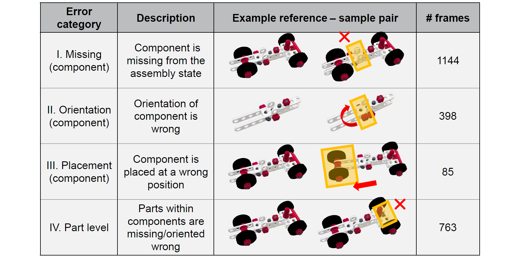

Assembly state recognition facilitates the execution of assembly procedures, offering feedback to enhance efficiency and minimize errors. However, recognizing assembly states poses challenges in scalability, since parts are frequently updated, and the robustness to execution errors remains underexplored. To address these challenges, this paper proposes an approach based on representation learning and the novel intermediate-state informed loss function modification (ISIL).
ISIL leverages unlabeled transitions between states and demonstrates significant improvements in clustering and classification performance for all tested architectures and losses. Despite being trained exclusively on images without execution errors, thorough analysis on error states demonstrates that our approach accurately distinguishes between correct states and states with various types of execution errors. The integration of the proposed algorithm can offer meaningful assistance to workers and mitigate unexpected losses due to procedural mishaps in industrial settings. The code, model weights, and data are publicly available through this project page.
Existing methods towards assembly state recognition or detection are approaching the problem from a classification perspective, training a neural network to memorize the expected object states. Although this has shown decent performance for procedures with a few expected assembly states, such approaches require the explicit definition of each possible assembly state. Therefore, if any of the object states are modified, e.g. due to an upgraded part or a newly added state, new data must be annotated and the entire network should be re-trained or fine-tuned. A second concern is the under-investigation of the performance of existing approaches on error states, where the approaches remain incapable of reliably detecting erroneous (or correct, but previously undefined) assembly states that are not explicitly defined in training. Requiring explicit definitions of error states is a fundamental issue, since defining all possible errors that can occur during an assembly is infeasible.
We propose to use a representation learning framework to address these challenges by learning a function that projects images into a meaningful embedding space. Furthermore, we propose a simple yet effective modification to existing loss functions, named intermediate-state informed loss (ISIL), which uses unlabeled part configurations in the training data as negative samples without enforcing their image embeddings towards a single cluster.
The improvements obtained by using ISIL on clustering performance range from 5% to 22%, across various network architectures and contrastive loss functions, whilst also improving classification performance on all experiments. We also demonstrate that representation learning-based approaches recognize real-world assembly errors from practical cases better than classification-based approaches, without being trained on any data containing error states. The code and annotations created to perform the study on these error states are published to stimulate research on this topic. Our contributions are:
Illustration of influence of the proposed loss function that leverages images containing intermediate assembly states, i.e. non-defined, transitional states between pre-defined states. In (a), the intermediate states (gray) are ignored during training, not leveraging any information that these images might have. In (b), the intermediate states are grouped into a single cluster, hindering the model's capacity to capture a meaningful embedding since these states are frequently not correlated. We propose (c), an intuitive modification to loss functions that leverages intermediate states exclusively as negative samples. Dissimilar embeddings of (potentially) uncorrelated states are only penalized if they are similar to any foreground (pre-defined) class.
Overview of the contrastive learning framework (with the proposed ISIL modification). Each mini-batch consists of real-world and synthetic images of pre-defined assembly states and real-world intermediate states. The images are passed through an encoder \({f(\cdot)}\), followed by a three-layer MLP projection head \({g(\cdot)}\). The resulting embeddings \({z_i}\) are used to calculate the contrastive loss. During inference, only the first layer of \({g(\cdot)}\) is used.
In order to evaluate the performance of our proposed framework on erroneous assembly states, two human annotators have labeled the user-intended state and error category for every image in IndustReal containing execution errors. The user-intended state is annotated based on the work instructions for each video, and the error category based on four error categories: missing component (I.), incorrect orientation (II.), incorrect placement (III.), and part-level errors (IV.). A description of the error categories and their occurrences in the IndustReal dataset are given below:
Categorization of errors including visual examples and the number of frames in IndustReal for each category. Based on whether an error is at component or part level, they are classified into four different categories.
These annotations are made public to stimulate research on this topic. In our paper, we perform an experiment on these error categories and demonstrate how the approaches based on representation learning outperform classification-based approached, especially when the ISIL modification is applied.
@inproceedings{schoonbeek2024supervised,
title={Supervised Representation Learning towards Generalizable Assembly State Recognition},
author={Schoonbeek, Tim J and Balachandran, Goutham and Onvlee, Hans and Houben, Tim and others},
booktitle={arXiv preprint arXiv:2408.11700},
year={2024},
doi={10.48550/arXiv.2408.11700}
}